This article is an overview of TCP/IP protocol stack. I will cover in detail what happens when a request to, say, bakerst221b.com is sent in the browser.
There is this famous OSI model… If you have ever scratched the surface of network security, you must have heard of it. It’s an empermal model (like spherical eggs 🥚 in the vacuum - a joke from Big Bang Theory). It’s not a real thing, it’s more like a blueprint 🗺️ for making real things. This model basically describes, what an empermal packet sent over network should approximately look like. It’s called a packet 📦 because it looks very much like one: your message wrapped in an envelope, wrapped in some paper, put into a box and sent via post office and finally delivered to the door. Comparing this process with mail services is not uncommon, but I will use it in my example. However, to make the process clearer, I’ve sacrificied some realism. Though it’s unreal, in my humble opinion it better describes the process.
Prerequisites
To get something somewhere we need some identifications, each level of identification narrowing the search. In case of our human world, if a shop needs to deliver, say, a book 📖 to a person, he gets his address (street number). But there are many people living on this street 🏘 . For further narrowing the search the shop needs a house number. But again, there are still many people living in the same building 🏡, how to get the parcel to the right one? Apparently, we need a flat number and the person’s name 💁♀️. The same happens when you sending a packet over the computer network. Everytime a PC (laptop or a mobile device) needs to talk to other computers (laptops, mobiles, PCs, servers) it sends a packet using a network 🕸️ of other computers 🖥️🖥️🖥️🖥️ .
To make the further illustration clearer, here are the mail service vs computer network equivalents:
- Person’s full name is MAC address (because it’s almoust unique to each device). It’s engraved on the devices network card when this card is manufactured. In terms of devices, swtiches live on data link layer and operate MAC addresses. In terms of people, network system administrators set this devices up and manage.
- Person’s street name is equivalent to IP address. There are local IP addresses and public ones. Local IP addresses are assigned by routers to all the devices in the local network. Local IPs usually start with
192.168.. Public IPs are assigned to the router that’s representing its local network. This public IP is the same for all devices behind the router. Public IP is assigned by IPS (Internet Provider Service). The job of assigning IPs is done by a DHCP (Dynamic Host Configuration Protocol) service. It’s usually turned on on the router to assign local addresses and on your IPS to assign public addresses to different routers. In addition to that DHCP service also provides some configuration data (such as Default Gateway, Domain Name, DNS Servers and more). In terms of devices, routers and DHCP servers live on network layer and operate IP addresses. In terms of people, network system administrators set this devices up and manage. - Person’s house number is vaguely equivalent to TCP/UDP port number (IP + port is usually called a socket). Each service on a machine is usually assigned a port, but it doesn’t mean it can’t use another one. Also, a lot of malware use specific ports and that’s how they are sometimes recognized. Most of the time you can get the service by looking at the port (
22SSH,80,443,8080web servers (https and http),21ftp and etc). In terms of devices, PCs live on this layer (transport) and operate port numbers. In terms of people, system administrators set this devices up and manage. - Message itself is a mere application data (session, presentation and application layers). In terms of devices, PCs live on these layers and operate applications. In terms of people, system administrators set this devices up and manage, but the application data flow, logic is managed by software developers. Session layer is more backend software engineering realm, but presentation and application data is usually developed by front-enders.
Analogy
There is this far far away world. It this world there are lots of cities, but we are going to talk about very peculiar one - Revencole. It is so peculiar because of the way they are messaging. They have something that looks very much like a Russian matryoshka doll for exchanging messages. Here’s a matryoshka:
As you may already know, it’s a hollow doll, which has another doll inside, also hollow and which also … well, you get the idea. That’s why they are called - nested dolls. Now imagine that in this city people actually talk using this dolls.
Mark is an accountant at a big company in Revencole. He is a serious person and he needs to fill out different forms and tables and send them to different agencies and goverment bodies (like a IRS to pay taxes or something like that). Each agency or government body has it’s own set of standarts for their documents. For example, Revencole’s IRS requires all documents about taxes to start with “This is for IRS with love 💌 “ (they are weird) and the total amount of taxes paid in the end of the document.
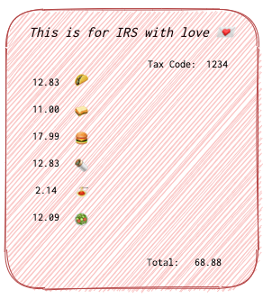
Also, Mark’s ordering pencils in one company in the city, and this shop requires all orders to be filled in the form of a table with a “I need a pencil” at the top and a table of goods following it in a form of a table.
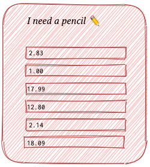
When IRS receives something that doesn’t start with “This is for IRS with love 💌 “, they don’t continue reading and just throw it away 🗑️ informing Mark’s or any other company that the document was invalid. If it’s valid, they simply take the last digit in the form and take is a total. So, if Mark confuses Tax Code and Total fields, he’ll be in trouble.
So, one gloomy evening Mark is preparing a tax report for IRS. He takes a paper with a blank form and writes “This is for IRS with love 💌 “ at the top.
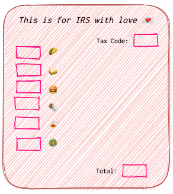
Then Mark fills out all the blanks in the form according to his calculations. He then folds it twice and puts the report in an envelope ✉. On this envelope he writes the name of an employee at IRS who usually handles his company - Thomas.
The he puts this into a small box 📦 and writes the house number on it (23). Then he puts it in a bigger box 📦 and puts a house number on it (Good St.).
Finally he puts the bigger box 📦 into a bag 👝 and orders a postman on a bike 🚴♂️ to take it to IRS.
A 🚴♂️ postman on a bike takes the parcel and gets to the post office. He gives the bag 👝 to the postoffice clerk 👨💼 James. James opens the bag and gets the bigger box 📦. He reads the Street number and gives the Box to another clerk Jessie 👩💼. Jessie opens it up and reads the house number written on the smaller box. Each of them then gives the postman on a bike this information and he departures.
He gets to the street Good St. specified by James and find a house number 23. He knocks at the door and meets the landlady 👵 of this house. He gives her the smaller box. She opens it up and reads the name on the envelope ✉. If she knows the complany or the person in question, she accepts it and delivers it to the recipient. IRS worker get’s the envolope, unwraps it and reads the report. He checks it for presence of “This is for IRS with love 💌” and if it’s there, takes the last number in the report and write it down into his IRS tax book.
A very peculiar algorithm but it works… That’s approximately how this model works. The 🚴♂️ postman on a bike is a physical layer (cables and radio waves) whose job is to provide the means of delivery. The postoffice clerk 👨💼 James and Jessie are to read the street name and house number and tell it to the 🚴♂️ postman on a bike (he can’t read). The landlady 👵 is the data link layer, whose job is to identify the correct person inside the building 🏠 and drop the parcel 📦 if no such person or company resides in the house that she owns.
Let’s now assume, that Mark has specified the correct street name and the employee’s name correctly, but made an error in house number 26 instead of 23. So, the 🚴♂️ postman on a bike would ride to the same street but knocked at the wrong door. 26’s landlord 👴 might have Thomas in the building, so he doesn’t recognize the mistake. He would take the emvelope to to Thomas in 26 building. Let’s assume this another Thomas is from the pencil company. He opens up the envelope and reads the message. But he doesn’t see “I need a pencil” on the top, so he thinks to himself “what the hell” and throws it away into a 🗑️ bin.
Getting Technical
So, now get more technical. Phisical layer and wires and stuff are two broad a topic to be discussed here. I am plannig to write an article about the 🚴♂️ postman on a bike as well but later (keep checking this section for Physical Layer article).
When you type bakerst221b.com in the address bar of your browser, your PC is doing a tremedous work behind the curtains. Let’s see, what this little workaholic elf is doing there. First, it 💻 needs to pack your message into a set of nested envelopes (matryoshkas or boxed or bags). What’s the message then? Since we are talking about websites, the most common wrapper would be the HTTP wrapper. What’s an HTTP? Remember the specific forms like IRS requiring the “This is for IRS with love 💌” at the top and the total number in the bottom? And remember the pencil company insisting on having a “I need a pencil” at the top with a table following it? So, basically this is what a protocol is. It is merely a standart, some form or set of rules which all the requests should adhere to. IRS uses one protocol while the pencil company another. Whenever Mark is sending something to IRS, he uses IRS’s set of rules for composing a message, and whenever he orders pencils, he follows the pencil company’s instructions. Otherwise they simply won’t read. HTTP is the set of rules that web servers make the clients to follow if this client wants to get a webpage in return. Here is how it looks like when requesting bakerst221b.com:
GET / HTTP/1.1
Host: bakerst221b.com
Connection: close
Upgrade-Insecure-Requests: 1
User-Agent: Mozilla/5.0 (Macintosh; Intel Mac OS X 10_15_7) AppleWebKit/537.36 (KHTML, like Gecko) Chrome/86.0.4240.198 Safari/537.36
Accept: text/html,application/xhtml+xml,application/xml;q=0.9,image/avif,image/webp,image/apng,*/*;q=0.8,application/signed-exchange;v=b3;q=0.9
Sec-Fetch-Site: none
Sec-Fetch-Mode: navigate
Sec-Fetch-User: ?1
Sec-Fetch-Dest: document
Accept-Encoding: gzip, deflate
Accept-Language: en-US,en;q=0.9,ru;q=0.8,es;q=0.7
Well, basically that the message that we are going to wrap in an envelope ✉, smaller box 📦, a bigger one 📦 and a bag 👝. Let’s use another example, closer to the ground.
Network Architecture
There is a nice family of Jack and Mary. They like pears 🍐 so let’s mark their realm with one. They both like this website and use it pretty often (grapes realm 🍇). But since these realms are quite far from each other, they can only communicate over some intermediary networks (network A ruled by Router A and network B ruled by Router B).
Let’s just asume that our PC with IP 192.168.1.70 (local address) and the website with IP 185.199.110.153 (public address) are on two different VLAN’s that are connected via three routers. What will happen if Mary goes to bakerst221b.com?
Let’s examine our current network architecture first:

Green arrows and green names with IP addresses (🍐 realm) is Mary’s and Jack’s home network. Only Jack’s and Mary’s Router knows their internal IP addresses. Whenever any device wants to talk to the outside world, it uses on singe IP - the routers one (orange 184.10.199.12). He is like a ambassador for them, representing them in the public network.
Orange 🍊 realm contains two Routers A and B. They are representing someone else. Who exactly - it is irrelevant for this example. For Jack and Mary they are simply intermediary nodes (almost like a road to the 🚴♂️ postman on a bike).
The grapes 🍇 realm is where web server with bakerst221b.com resides with its own ambassador Router who talks from its behalf. Notice that I’ve not put any local addresses (local addresses known only to the router and devices connected to it usually begin with 192.168.) for bakerst221b.com and it’s Router. It’s because from Mary’s or Jack’s point of view there is not wat to know it. They only see and care about the public IPs.
When Mary connects to bakerst221b.com using her laptop, her request goes to the Jack's and Mary's Router, then to the Router A, then Router B and get to Bakerst221b.com's Router. The latter will then forward the request to bakerst221b.com. So the route is 🍐 -> 🍊 -> 🍇. The response will go the same route but reversed (🍇 -> 🍊 -> 🍐).
Let’s see this work in more details using an example. One sunny day Mary decides to visit bakerst221b.com and check it for updates. She opens her laptop and opens a web browser. Then she types in the address bar https://bakerst221b.com and hits Enter. Her laptop is not panicking. It knows what to do. It needs to pack the following parcel:
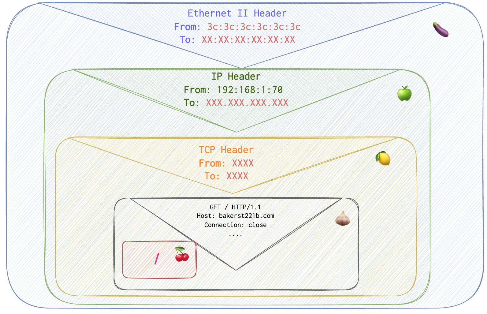
XXX in red stand for some data that the PC 🖥️ doesn’t know at the moment:
bakerst221b.com’s IP addressbakerst221b.com’s port numberbakerst221b.com’s MAC address
It sends several separate request to fill in the fields in question.
Step 1. Get the IP address
Using DNS protocol her PC asks the following:
💻 “I have a human readable garbage (
bakerst221b.com), I need a hardcore machine equivalent (IP address). Does anyone know who the heckbakerst221b.comis?”.
– Whom is it asking?
– A DNS server.
– Where is it?
– Her internet provider has it.
– Does Internet Provider’s DNS server has all the domain names?
– Of course not. It would blow up. It asks its fellow DNS buddies until the right one is found.
Unnecessary info I’ve found out while writing this article. It turns out, Mary’s laptop first tries doing this over IPv6 (red square) and fails. Two requests: for A and AAAA records (see DNS article) to get both IPv4 and IPv6 addresses for
bakerst221b.com. For both requests itgot aRefusedresponse - I don’t understand the whole internals of this, but guess IPv6 connection is not supported for my hosting server 💡 .
Then it tries to ask over IPv4 for the same both records (A and AAAA) and gets the addresses it needed (purple square):
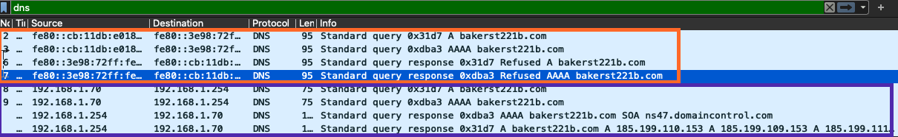
Since there are no IPv6 addresses assigned, 🖥️ PC only needs the response for A record. Ok, not that 🖥️ gets its IPs, it can finally sign his first envelope, the IP header (see the outer envelope ✉ To field filled in):
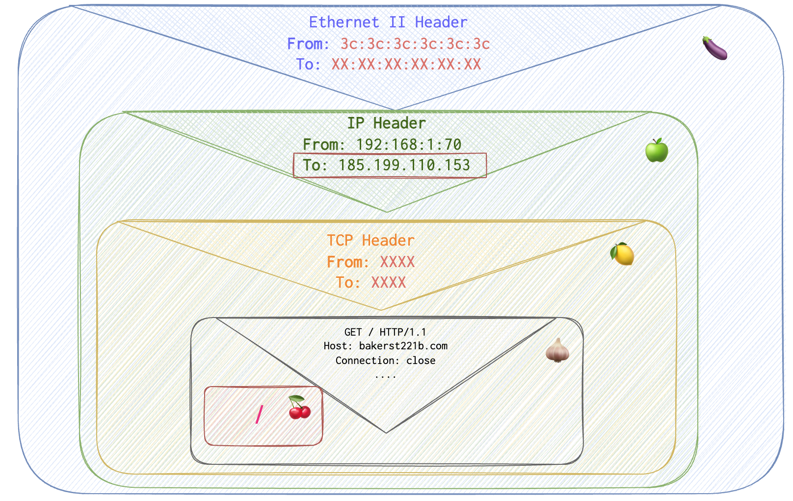
But there are also transport and datalink layers…. His parcel now looks like this :
Step 2. Get the MAC address
Data Link layer, is tricky one. The 🖥️ itself doesn’t do that dirty job. It just puts its router’s MAC address, knowing that the router will know what to do. How does it know the Router’s MAC? well, it asks. It knows that the router sits at 192.168.1.1. So, it sends an ARP request (just like the ones we will see below in a minute), asking for 192.168.1.1’s MAC. But this won’t be as complex as the example below. Since these devices are on the same network, there only going to be one ARP request and a single response from the J&M Router.
Let see, what that little chap (J&M Router) is doing. How does it get the MAC address of bakerst221b.com? To determine MAC address (to help Mary’s laptop 💻 sign the second envelope with MAC addresses) the router sends an ARP request to the network of his buddies (other representatives, Router A).
- J&M Router puts
ff:ff:ff:ff:ff:ffMAC address in the Enthernet header’sTofield (which means broadcast and therefor all Jack’s and Mary’s router’s buddies are going to get this message) and its own in MACFromfield (orange square). In the ARP request it puts the newly discovered IP ofbakerst221b.comasTarget IPand its own MAC and IP as aSender MACandSender IP(see the scheme below, purple square):
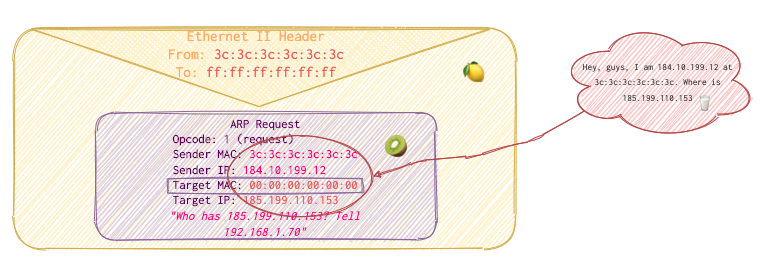
-
Router A get’s the ARP request from Jack and Mary’s Router. It reads the request, reads the
Target IP, checks its records and realized that it doesn’t know the guy. That’s why it asks his fellow Router B. In the Ethernet II header it puts its own MAC address inFromandff:ff:ff:ff:ff:ffinTofields (orange square). It leaves the ARP request itself untouched (purple square). So,Target MACremains untouched. ❓ -
Router B get’s the ARP request from Router A. It reads the ARP request, reads the
Target IP, checks its records and realized that it doesn’t know the guy. That’s why it asks his fellowBakerst221b’s Router. In the Ethernet II header it puts its own MAC address inFromandff:ff:ff:ff:ff:ffinTofields (orange square). It leaves the ARP request itself untouched (purple square). So,Target MACremains untouched again. ❓💡 May be the Sender’s MAC is changing - don’t know yet. -
Bakerst221b’s Router receives the request. It reads the ARP request, reads theTarget IP, checks its records and realized that it’s itself. So, in its response it switchesSourceandTargetfields’ values and puts its own MAC inSource MACfield. It then sends the packet to Router B. So now it would look something like this: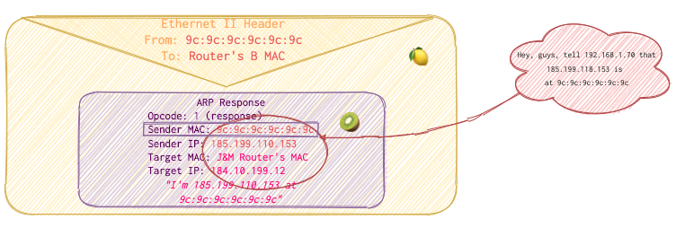
-
Router B just relays the answer, substituting
Fromto its MAC address andToto the Router’s A MAC in Ethernet II (Data link layer).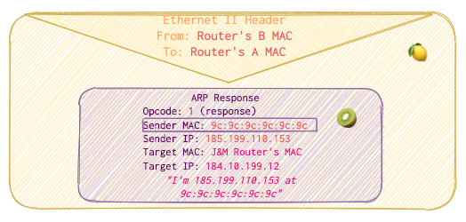
-
Router A receives the package and relays it to Jack’s and Mary’s router, substituting
Fromto its MAC address andToto the J&M Router’s MAC in Ethernet II (Data link layer).
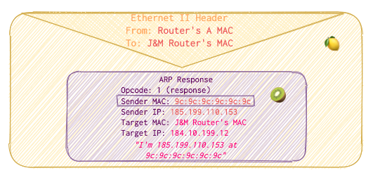
Here are ARP request and response intercepted in real traffic:
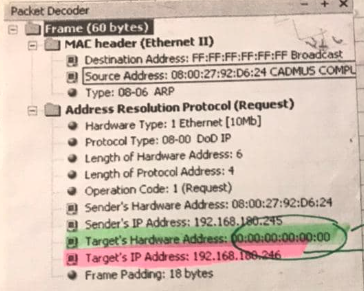
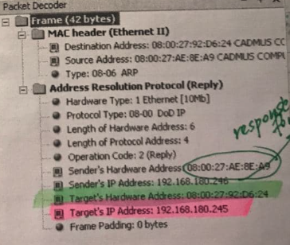
Now, J&M saves the data for some time for future requests. The main idea is that the device is asking “Who has 185.199.110.153? Tell 184.10.199.12” recursively thorogh a network of interconnected network devices. As soon as it gets the answer, it fills the data link layer header with the correct MAC address. Please note, that ARP is only packed into data link (Ethernet) envelope 📩 , not subsequent wrappings into IP and TCP envelopes since we are not actually sending any data and don’t need IP and TCP envelopes for that. Our postoffice clerk 1 and postoffice clerk 2 are both having a rest 🌴 .
So, Mary’s laptop already knows the destination IP that he acquired with the help of DNS request: 185.199.110.153. It also knows its own MAC and IP (obviously). Let’s keep in mind mind that Mary’s laptop doesn’t talk to the outer world on its own. So, it puts its representative’s MAC in Ethernet II header (To field) instead of bakerst221b.com’s MAC. For example, I’ve requested a sherlock.com page and captured the request. However, IP and port are of sherlock.com, of course. It also inserts its local IP as the Source IP in IP header (see the Source Address in the screenshot below, it’s local since starts with 192.168.) but you need a public one to talk to others.
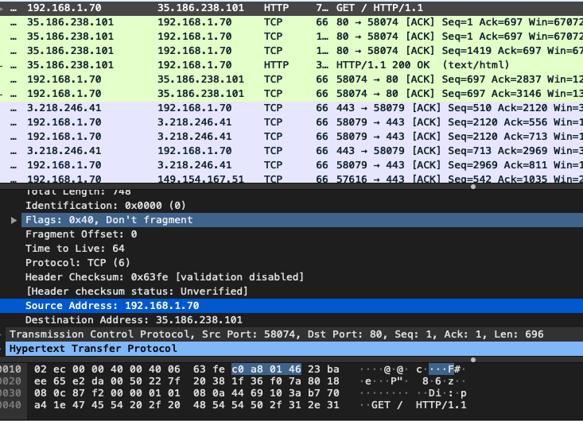
That’s why when the router receives the package, it performs two importnant modifications.
- changes the
FromandToMAC addresses in Ethernet II header.Fromits own MAC andToRouter’s A MAC. - Substitues
Source IPin IP header with its own public IP. This is IP can be seen when you typewhat's my ipin google.com or go to your router’s settings and look at the main page. It’s the IP others see on the network.
The J&M Router also takes a note, that the machine with local address 192.168.1.70 send this request. It’s needed, of course, to be able to deliever the reply to Mary’s laptop 💻 later.
So, now the request is going to look as follows:
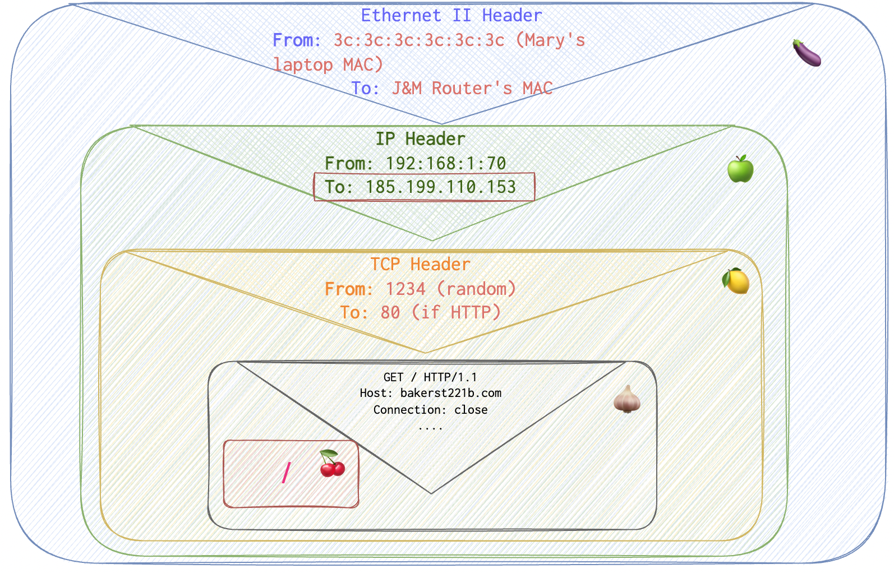
Now the port, how does it get the port to connect to? For more details see the article about TCP/UDP here.
References
Wireshark and Iris packet sniffers
https://developer.mozilla.org/en-US/docs/Web/Performance/How_browsers_work
https://edx.readthedocs.io/projects/edx-developer-guide/en/latest/preventing_xss/preventing_xss.html